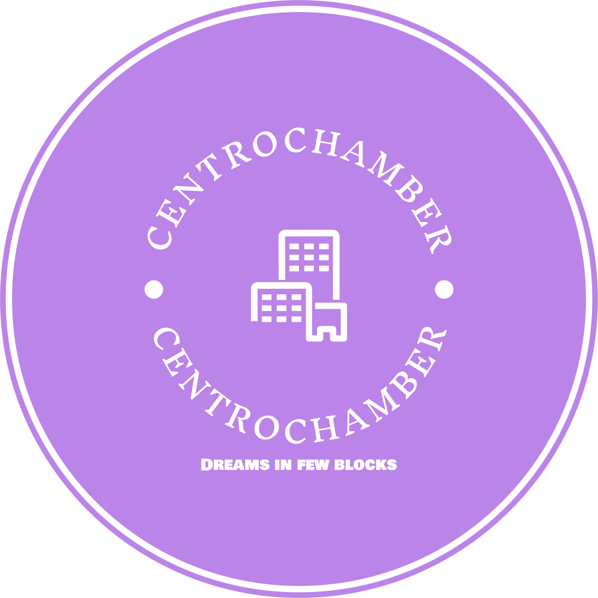

Overview
Purpose
As its name describes it will represent the chamber of business allied from the Centro neighborhood, one of the most important economic centers from Uruguay's capital city. It will provide information, location, special discount, events, business adhered, among others.
Audience
Local visitors and foreighners who want to find their ideal store. Also aims towards new businesses located or to be located within the neighborhood so adherence is increased.
Scenarios
- List Item 1
- List Item 2
- List Item 3
- List Item 4
Branding
Website Logo
Style Guide
Color Palette
Palette URL:
https://coolors.co/396e94-e7c24f-a43312-c67b31| Primary | Secondary | Accent 1 | Accent 2 |
|---|---|---|---|
| #396E94 | #E7C24F | #A43312 | #C67B31 |
Typography
Heading Font: IM Fell French Canon
Paragraph Font: Lato
Normal paragraph example
The center of Montevideo, starting from the historic area called 'Old City'. It offers the best of the city and all its diversity.
Colored paragraph example
The commercial area made up of the Ciudad Vieja, Centro and Cordón neighborhoods. Provides access to restaurants, cafes, clothing stores, electronics stores, museums and much more.
Navigation
Site Map
Wireframes
Home